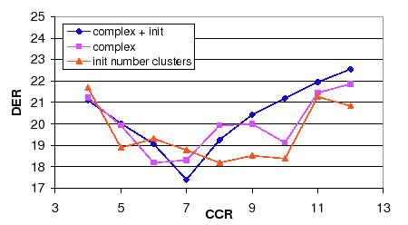

Next: Cross-Validation EM Training Up: Individual Algorithms Performance Previous: Individual Algorithms Performance Contents
As pointed out during the system description chapters, the speaker diarization system via agglomerative clustering in the way that it is implemented in this thesis uses very small GMM models trained with small amounts of speaker data. These allow the system to be computationally faster than systems based on UBM adaptation techniques (like Zhu et al. (2006)) but it requires of a more accurate selection of the number of initial clusters in the system, the complexity of the cluster models, and how each model is trained so that data is equally well represented in each model and comparisons between them yield better decisions in the agglomerative process.
For both the number of initial clusters to be used in the system and for the complexity of the cluster models the Cluster Complexity Ration (CCR) is defined as the parameter to be optimized, as described in section 4.2.2. In the experiments performed for both algorithms an initial analysis studied the effect of such parameter in the final DER when using either algorithm alone compared to the baseline system. As both algorithms use the same parameter, a join experiment using both algorithms was used to tune the optimum CCR value according to the average DER between the three systems considered in the experiments.
Figure 6.7 shows the DER for the development set data using the three system implementations for model complexity selection. While SDM and MDM systems obtain a similar behavior on the different CCR values, the TDOA-MDM system tends to obtain the best scores for the lower set of evaluated CCR. Given that only the acoustic feature models are affected by the algorithm (not the TDOA values) this indicates that when using the TDOA values the system becomes more robust to complexity selection errors, given that bigger models (obtained by smaller CCR values) do not overfit as much to the data than when using acoustics alone.
The same behavior is observed when evaluating the number of initial clusters algorithm in figure 6.8. When using the TDOA-MDM system the DER is very stable from CCR=5 to 10. Both algorithms show also an increase in DER when the CCR values are higher that 10, which indicates that models are too small to well represent the speaker data and too few models are initially created to allow the system to distribute the data appropriately among the speakers.
|  |
In both algorithms the CCR value that obtains the optimum average DER is within the range of CCR=6 to 8. In order to use a single CCR value both algorithms are combined and the DER is shown in figure 6.9. In it the average DER between the three systems when using complexity selection or initial number of clusters is compared to the average DER when using both combined. It becomes very clear the existence of an average minimum value at CCR = 7.
Table 6.13 summarizes the results shown in the figures for the development set and shows the evaluation set scores obtained using the optimum parameters for each algorithm. While combining the two algorithms using a new CCR optimum value gives an improvement versus either development results, in the evaluation set the combined score is very similar to the worse of the individual algorithms. In any case, an improvement of 7.05% relative is shown in the development set and only a 0.2% relative in the evaluation set.
user 2008-12-08